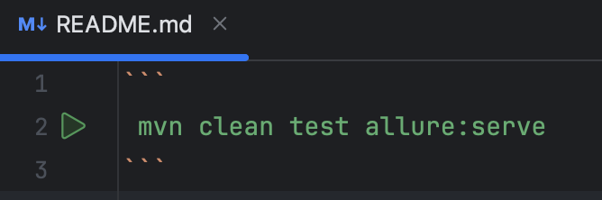

本书作者：测试开发刚哥，文章版权归个人所有，未经授权请勿转载。
为什么要用JUnit5？
我最近把接口平台不好实现的自动化，在本地写了个Java小项目来实现了，集成Allure发现IntelliJ IDEA 2024.3.2 (Community Edition)的surefire只能识别junit，现象是在mvn test时会打印：
[INFO] --- surefire:3.2.3:test (default-test) @ auto ---
[INFO] Using auto detected provider org.apache.maven.surefire.junitplatform.JUnitPlatformProvider
无法通过IDEA配置把junit换成testng。同时断言时junit的错误提示也能到具体数据类型，而testng不会：
org.opentest4j.AssertionFailedError: expected: java.lang.String@667025e1<3> but was: java.lang.Integer@23b2b751<3>
Expected :3
Actual :3
怎么配置？
第一步是要让mvn test命令执行后，能生成allure的结果数据，一堆json文件。参考官网教程：
https://allurereport.org/docs/junit5/
配置pom.xml即可。
第二步是要把结果数据生成HTML报告并在浏览器打开。
方式1是plugin插件，不需要手动下载安装包：
<plugin>
<groupId>io.qameta.allure</groupId>
<artifactId>allure-maven</artifactId>
<version>2.12.0</version>
<configuration>
<reportVersion>${allure.version}</reportVersion>
<resultsDirectory>${project.build.directory}/allure-results</resultsDirectory>
</configuration>
</plugin>
配置后，Maven会在根目录生成.allure文件夹，就是运行文件了，执行命令即可：
mvn allure:serve
方式2是单独安装Allure，参考官网说明：
https://allurereport.org/docs/install/
安装后使用命令allure serve。
最后分享1个小技巧，我用的IntelliJ IDEA 2024.3.2 (Community Edition)支持Markdown文件执行命令，也就是在.md文件里面输入这3行：

IDEA会在左侧出现绿色运行小箭头，点击就可以执行。